The caugi package provides a flexible plotting system
built on grid graphics for visualizing causal graphs. This vignette
demonstrates how to create plots with different layout algorithms and
customize their appearance.
Basic Plotting
The simplest way to visualize a caugi graph is with the
plot() function:
# Create a simple DAG
cg <- caugi(
A %-->% B + C,
B %-->% D,
C %-->% D,
class = "DAG"
)
# Plot with default settings
plot(cg)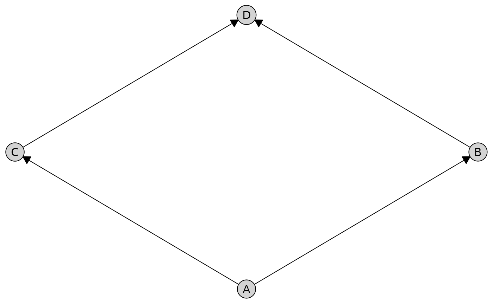
By default, plot() automatically selects the best layout
algorithm based on your graph type. For graphs with only directed edges,
it uses the Sugiyama hierarchical layout. For graphs with other edge
types, it uses the Fruchterman-Reingold force-directed layout.
Layout Algorithms
The caugi package provides four layout algorithms, each
optimized for different use cases.
Sugiyama (Hierarchical Layout)
The Sugiyama layout (Sugiyama, Tagawa, and Toda 1981) is ideal for directed acyclic graphs (DAGs). It arranges nodes in layers to emphasize hierarchical structure and causal flow from top to bottom, minimizing edge crossings.
# Create a more complex DAG
dag <- caugi(
X1 %-->% M1 + M2,
X2 %-->% M2 + M3,
M1 %-->% Y,
M2 %-->% Y,
M3 %-->% Y,
class = "DAG"
)
# Use Sugiyama layout explicitly
plot(dag, layout = "sugiyama", main = "Sugiyama")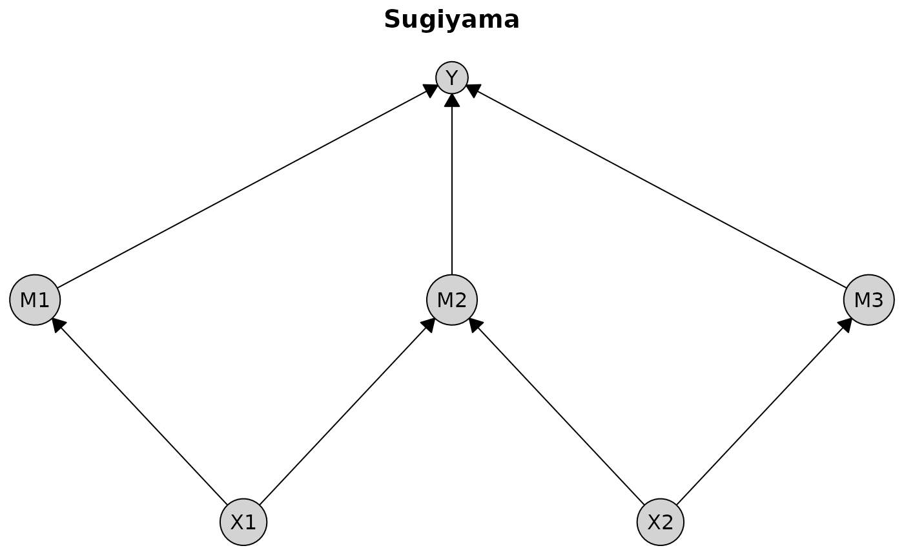
Best for: DAGs, causal models, hierarchical structures
Limitations: Only works with directed edges
Fruchterman-Reingold (Spring-Electrical)
The Fruchterman-Reingold layout (Fruchterman and Reingold 1991) uses a physical simulation where edges act as springs and nodes repel each other like charged particles. It produces organic, symmetric layouts with relatively uniform edge lengths.
# Create a graph with bidirected edges (ADMG)
admg <- caugi(
A %-->% C,
B %-->% C,
A %<->% B, # Bidirected edge (latent confounder)
class = "ADMG"
)
# Fruchterman-Reingold handles all edge types
plot(admg, layout = "fruchterman-reingold", main = "Fruchterman-Reingold")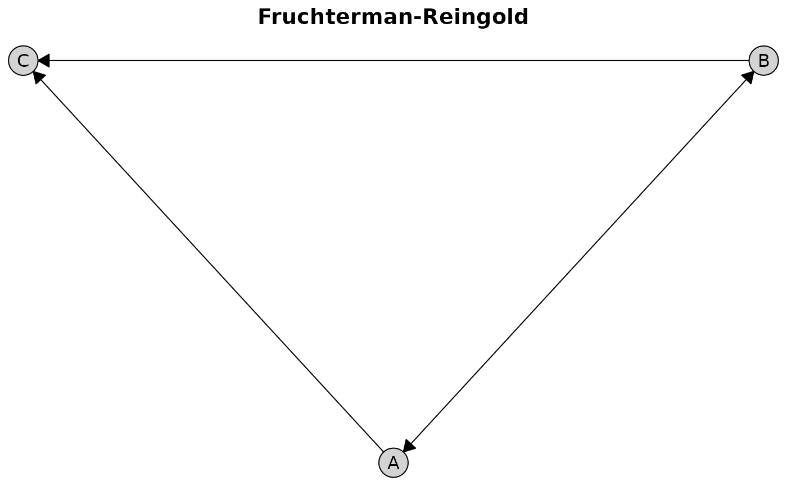
Best for: General-purpose visualization, graphs with mixed edge types
Advantages: Fast, works with all edge types, produces balanced layouts
Kamada-Kawai (Stress Minimization)
The Kamada-Kawai layout (Kamada and Kawai 1989) minimizes “stress” by making Euclidean distances in the plot proportional to graph-theoretic distances. This produces high-quality layouts that better preserve the global structure compared to Fruchterman-Reingold.
# Create an undirected graph
ug <- caugi(
A %---% B,
B %---% C + D,
C %---% D,
class = "UG"
)
plot(ug, layout = "kamada-kawai", main = "Kamada-Kawai")
Best for: Publication-quality figures, when accurate distance representation matters
Advantages: Better global structure preservation
Bipartite Layout
The bipartite layout is designed for graphs with a clear two-group structure, such as treatment/outcome or exposure/response relationships. It arranges nodes in two parallel lines (rows or columns).
Here’s an example bipartite causal graph with treatments and outcomes:
bipartite_graph <- caugi(
Treatment_A %-->% Outcome_1 + Outcome_2 + Outcome_3,
Treatment_B %-->% Outcome_1 + Outcome_2,
Treatment_C %-->% Outcome_2 + Outcome_3,
class = "DAG"
)Horizontal rows (treatments on top, outcomes on bottom)
plot(
bipartite_graph,
layout = "bipartite",
orientation = "rows"
)
Vertical columns (treatments on left, outcomes on right)
plot(
bipartite_graph,
layout = "bipartite",
orientation = "columns"
)
The bipartite layout automatically detects which nodes should be in which partition based on incoming edges. Nodes with no incoming edges are placed in one group, while nodes with incoming edges are placed in the other. You can also specify the partition explicitly:
partition <- c(TRUE, TRUE, TRUE, FALSE, FALSE, FALSE)
plot(
bipartite_graph,
layout = caugi_layout_bipartite,
partition = partition,
orientation = "rows"
)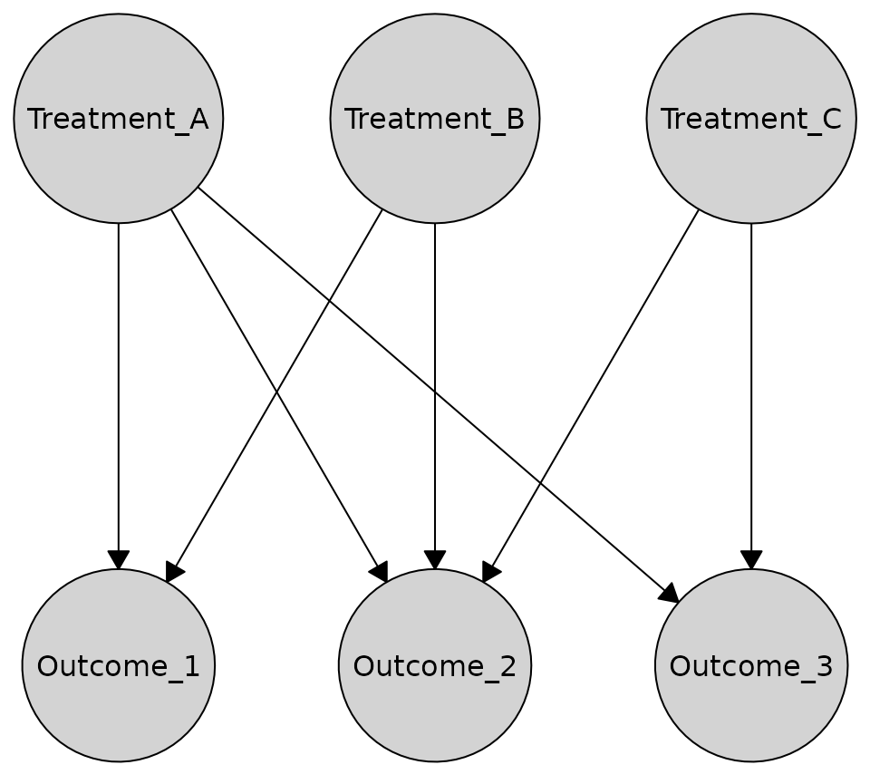
Best for: Treatment-outcome structures, exposure-response models, bipartite causal relationships
Advantages: Clear visual separation, emphasizes directed relationships between groups
Tiered Layouts
For graphs with more than two hierarchical levels, the tiered layout places nodes in multiple parallel tiers. This is ideal for visualizing causal structures with clear stages, such as exposures → mediators → outcomes.
First, create a simple three-tier causal graph:
We can define tiers using a named list:
tiers <- list(
exposures = c("X1", "X2"),
mediators = c("M1", "M2"),
outcome = "Y"
)
plot(cg_tiered, layout = "tiered", tiers = tiers, orientation = "rows")
The tiered layout supports three input formats:
- named lists,
- named numeric vectors, and
-
data.frames.
Named lists is the most intuitive format, and what we have already shown. But you can also use a named numeric vector:
tiers_vector <- c(X1 = 1, X2 = 1, M1 = 2, M2 = 2, Y = 3)
plot(cg_tiered, layout = "tiered", tiers = tiers_vector, orientation = "columns")
Finally, you can use a data.frame to specify tiers
directly.
tiers_df <- data.frame(
name = c("X1", "X2", "M1", "M2", "Y"),
tier = c(1, 1, 2, 2, 3)
)
layout_df <- caugi_layout_tiered(cg_tiered, tiers_df, orientation = "rows")
plot(cg_tiered, layout = layout_df)
Best for: Multi-stage causal processes, mediation analysis, temporal sequences, hierarchical structures
Advantages: Clear stage separation, flexible tier assignment, supports 2+ tiers, multiple input formats
Comparing Layouts
You can compute and examine layout coordinates directly using
caugi_layout():
layout_sug <- caugi_layout(dag, method = "sugiyama")
layout_fr <- caugi_layout(dag, method = "fruchterman-reingold")
layout_kk <- caugi_layout(dag, method = "kamada-kawai")
# Examine coordinates
head(layout_sug)
#> name x y
#> 1 X1 0.25 0.0
#> 2 X2 0.75 0.0
#> 3 M1 0.00 0.5
#> 4 M2 0.50 0.5
#> 5 M3 1.00 0.5
#> 6 Y 0.50 1.0Customizing Plots
The plot() function provides extensive customization
options for nodes, edges, and labels.
Node Styling
You can customize the appearance of nodes using the
node_style parameter. Styles may be applied globally (to
all nodes) or locally (to specific nodes).
Apply the same style to all nodes:
plot(
cg,
node_style = list(
fill = "lightblue", # Fill color
col = "darkblue", # Border color
lwd = 2, # Border width
padding = 4, # Text padding (mm)
size = 1.2 # Size multiplier
)
)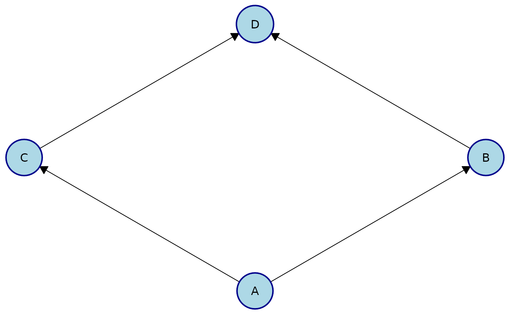
Customize styles for individual nodes using the by_node
option:
plot(
cg,
node_style = list(
by_node = list(
A = list(fill = "red", col = "blue", lwd = 2),
B = list(padding = "2")
)
)
)
Available node style parameters:
-
Appearance (passed to
gpar()):fill,col,lwd,lty,alpha -
Geometry:
padding(text padding in mm),size(node size multiplier)
Edge Styling
You can customize edge appearance using the edge_style
parameter. Styles can be applied globally, by edge type, by source node,
or to individual edges.
Apply the same styling to all edges in the graph:
plot(
dag,
edge_style = list(
col = "darkgray", # Edge color
lwd = 1.5, # Edge width
arrow_size = 4 # Arrow size (mm)
)
)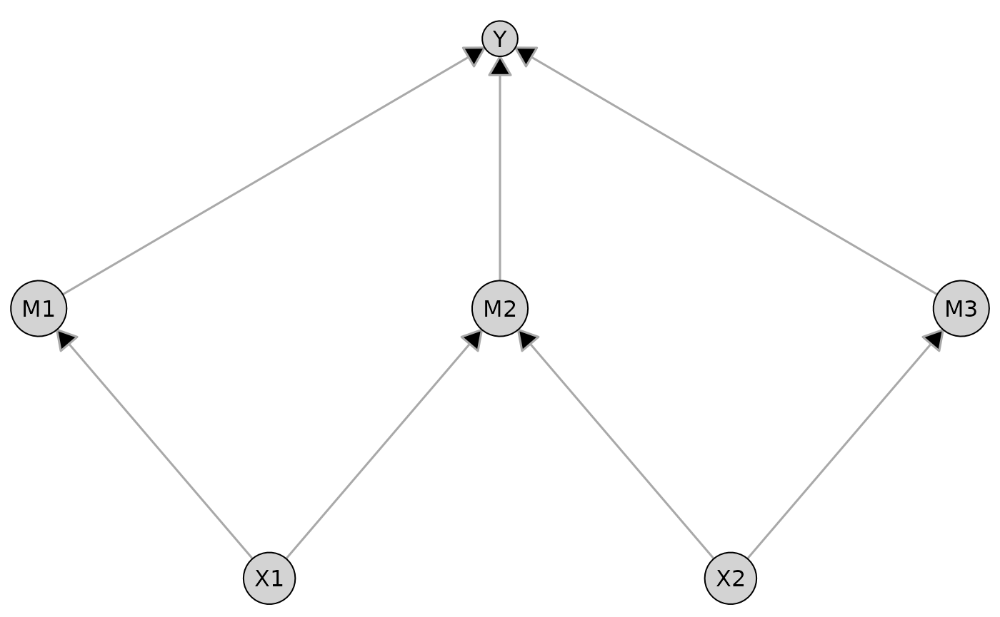
Customize different edge types (e.g., directed vs. bidirected edges):
plot(
admg,
layout = "fruchterman-reingold",
edge_style = list(
directed = list(col = "blue", lwd = 2),
bidirected = list(col = "red", lwd = 2, lty = "dashed")
)
)
Apply styling to all edges from a given node:
plot(
admg,
layout = "fruchterman-reingold",
edge_style = list(
by_edge = list(
A = list(col = "green", lwd = 2)
)
)
)
Target an individual edge between two nodes:
plot(
admg,
layout = "fruchterman-reingold",
edge_style = list(
by_edge = list(
A = list(
B = list(col = "orange", lwd = 3)
)
)
)
)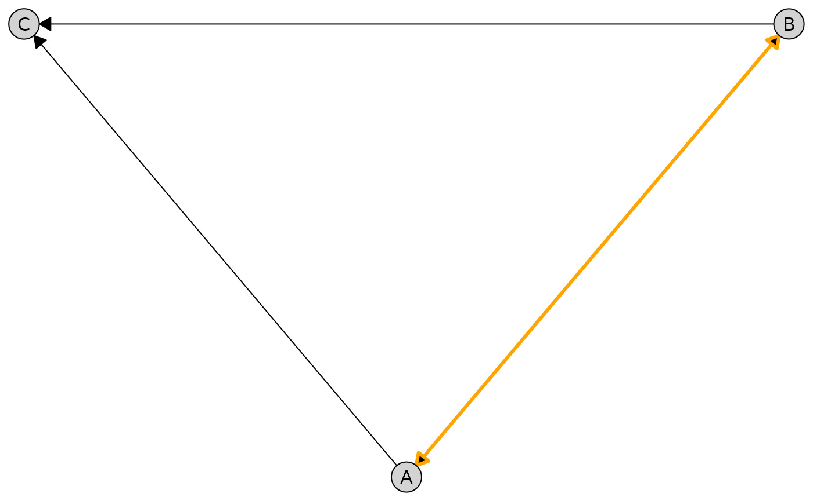
The style precedence is as follows (highest to lowest):
- Specific edge (
by_edgewith both from and to nodes) - All edges from a node (
by_edgewith only from node) - Per-type edge styles (
directed,undirected, etc.) - Global edge styles
The example below combines global, per-type, per-node, and per-edge styling in a single plot. More specific styles override more general ones according to the precedence rules above.
plot(
admg,
layout = "fruchterman-reingold",
edge_style = list(
# Global defaults
col = "gray80",
lwd = 1,
# Per-type styling
directed = list(col = "blue"),
bidirected = list(col = "red", lty = "dashed"),
# All edges from node A
by_edge = list(
A = list(
col = "green",
lwd = 2,
# Specific edge A -> B
B = list(
col = "orange",
lwd = 3
)
)
)
)
)
Available edge style parameters:
-
Appearance (passed to
gpar()):col,lwd,lty,alpha,fill -
Geometry:
arrow_size(arrow length in mm),circle_size(radius of endpoint circles for partial edges in mm) -
Per-type options:
directed,undirected,bidirected,partial
Partial Edges
Partial edges (o-> and o-o) are rendered
with circles at their endpoints to indicate uncertainty about edge
orientation. These edges appear in PAGs (Partial Ancestral Graphs). You
can customize the circle size:
g <- caugi(
A %o->% B,
B %-->% C,
C %o-o% D,
class = "UNKNOWN"
)
plot(
g,
edge_style = list(
partial = list(
col = "purple",
lwd = 2,
circle_size = 2.5 # Larger circles (default is 1.5)
)
)
)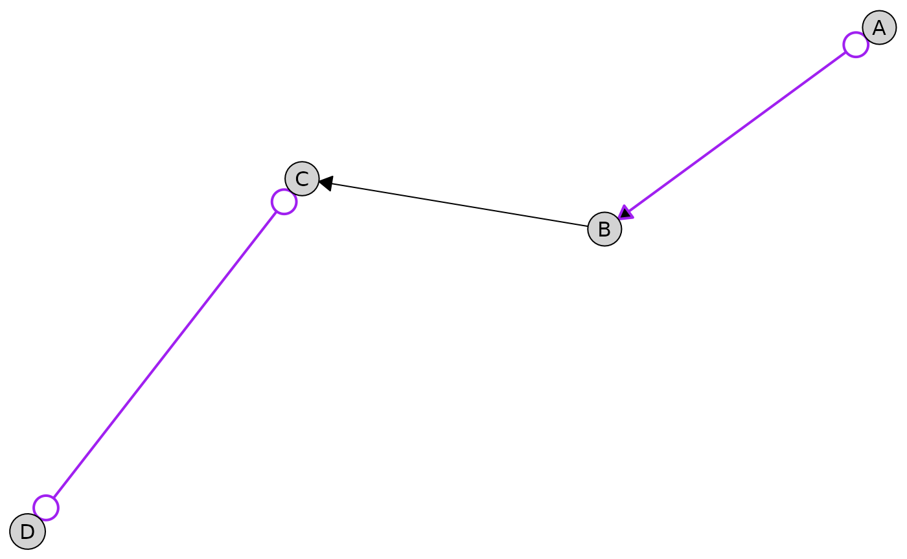
Label Styling
Customize node labels with the label_style
parameter:
plot(
cg,
main = "Customized Labels",
label_style = list(
col = "white", # Text color
fontsize = 12, # Font size
fontface = "bold", # Font face
fontfamily = "sans" # Font family
),
node_style = list(
fill = "navy" # Dark background for white text
)
)
Available label style parameters (passed to gpar()):
-
col,fontsize,fontface,fontfamily,cex
Styling Tiered Layouts
By default, tiered layouts are plotted with boxes around each tier and labels indicating the tier names (if provided).
plot(cg_tiered, tiers = tiers)
But you can customize the appearance of tier boxes using the
tier_style parameter. Here, for isntance, we specify
different fill colors for each tier using a vector.
plot(
cg_tiered,
tiers = tiers,
tier_style = list(
fill = c("lightblue", "lightgreen", "lightyellow"),
col = "gray50",
lty = 2,
alpha = 0.3
)
)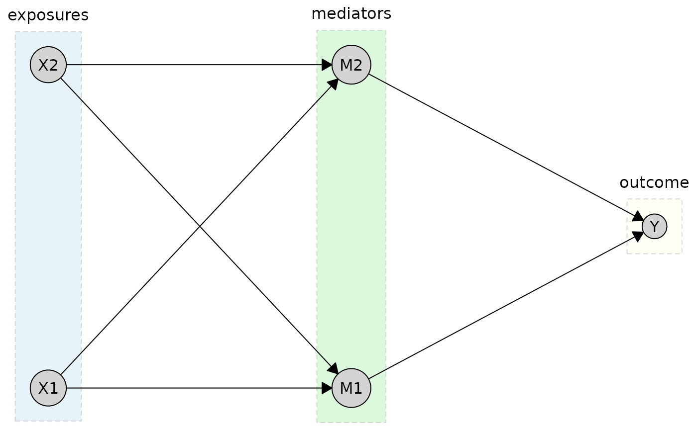
For more granular control, you can specify styles for individual tiers. Here, we customize the “exposures” and “outcome” tiers specifically:
plot(
cg_tiered,
tiers = tiers,
tier_style = list(
fill = "gray95",
col = "gray60",
alpha = 0.2,
by_tier = list(
exposures = list(
fill = "lightblue",
col = "blue",
lwd = 2
),
outcome = list(
fill = "lightyellow",
col = "orange",
lwd = 3,
lty = 1
)
)
)
)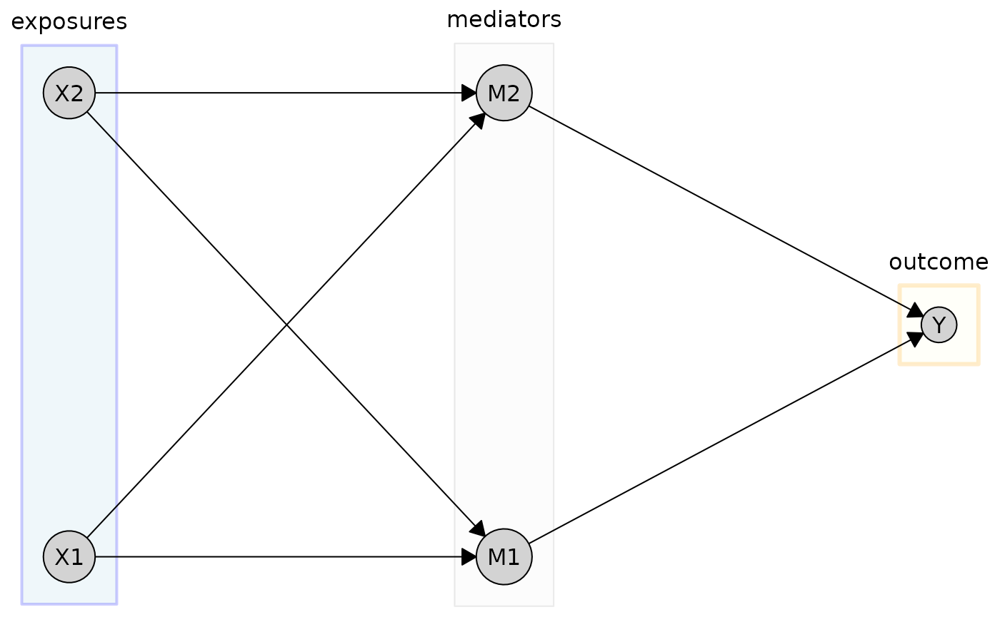
Labels for the tiers can also be customized. Here, for example, we change the font size and color of the tier labels:
plot(
cg_tiered,
tiers = tiers, # Named list: exposures, mediators, outcome
tier_style = list(
fill = c("lightblue", "lightgreen", "lightyellow"),
label_style = list(
fontsize = 11,
fontface = "bold",
col = "gray20"
)
)
)
You can also provide custom labels for each tier instead of using the names from the tiers object
plot(
cg_tiered,
tiers = tiers,
tier_style = list(
fill = "gray95",
labels = c("Exposure Variables", "Mediating Variables", "Outcome Variable")
)
)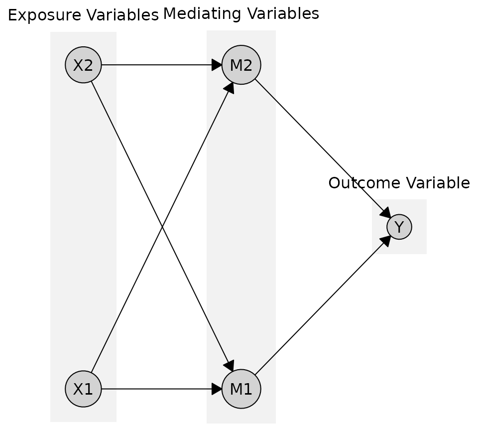
If you don’t want any boxes or labels around the tiers, you can disable them:

Working with Different Graph Types
The plotting system works with all graph types supported by
caugi.
Partially Directed Acyclic Graphs (PDAGs)
First, let’s create a PDAG with both directed and undirected edges:
pdag <- caugi(
A %-->% B,
B %---% C, # Undirected edge
C %-->% D,
class = "PDAG"
)
plot(
pdag,
edge_style = list(
directed = list(col = "blue"),
undirected = list(col = "gray", lwd = 2)
)
)
Acyclic Directed Mixed Graphs (ADMGs)
Here’s an example of an ADMG with directed and bidirected edges:
complex_admg <- caugi(
X %-->% M1 + M2,
M1 %-->% Y,
M2 %-->% Y,
M1 %<->% M2, # Latent confounder between mediators
class = "ADMG"
)
plot(
complex_admg,
layout = "kamada-kawai",
node_style = list(fill = "lavender"),
edge_style = list(
directed = list(col = "black", lwd = 1.5),
bidirected = list(col = "red", lwd = 1.5, lty = "dashed", arrow_size = 3)
)
)
Undirected Graphs (UGs)
We also support undirected graphs. Here’s a Markov random field example:
markov <- caugi(
A %---% B + C,
B %---% D,
C %---% D + E,
D %---% E,
class = "UG"
)
plot(
markov,
layout = "fruchterman-reingold",
node_style = list(
fill = "lightyellow",
col = "orange",
lwd = 2
),
edge_style = list(col = "orange")
)
Plot Composition
The caugi package provides intuitive operators for
composing multiple plots into complex layouts, similar to the patchwork
package.
Basic Composition
Use + or | for horizontal arrangement and
/ for vertical stacking:
# Create two different graphs
g1 <- caugi(
A %-->% B,
B %-->% C,
class = "DAG"
)
g2 <- caugi(
X %-->% Y,
Y %-->% Z,
X %-->% Z,
class = "DAG"
)
# Create plots
p1 <- plot(g1, main = "Graph 1")
p2 <- plot(g2, main = "Graph 2")
# Horizontal composition (side-by-side)
p1 + p2
The | operator is an alias for +:
# Equivalent to p1 + p2
p1 | p2
For vertical stacking, use the / operator:
p1 / p2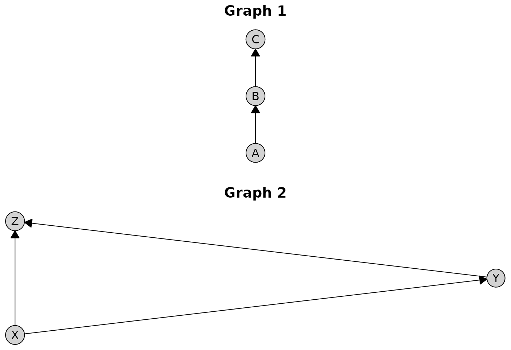
Nested Compositions
Compositions can be nested to create complex multi-plot layouts:
g3 <- caugi(
M1 %-->% M2,
M2 %-->% M3,
class = "DAG"
)
p3 <- plot(g3, main = "Graph 3")
# Complex layout: two plots on top, one below
(p1 + p2) / p3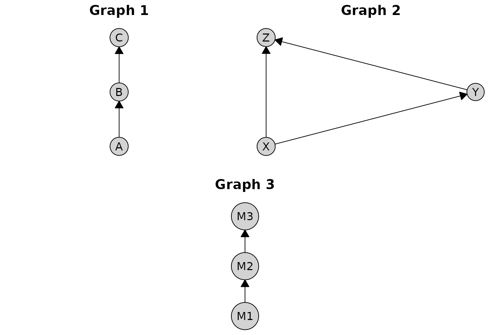
You can mix operators freely. Here’s an example combining horizontal and vertical arrangements:
(p1 + p2) / (p3 + p1)
Configuring Spacing
The spacing between composed plots is controlled globally via
caugi_options():
caugi_options(plot = list(spacing = grid::unit(2, "lines")))
p1 + p2
To reset the default, you can call
caugi_default_options():
Global Plot Options
The caugi_options() function allows you to set global
defaults for plot appearance, which can be overridden on a per-plot
basis.
Setting Default Styles
# Configure global defaults
caugi_options(plot = list(
node_style = list(fill = "lightblue", padding = 3),
edge_style = list(arrow_size = 4, fill = "darkgray"),
title_style = list(col = "blue", fontsize = 16)
))
# This plot uses the global defaults
plot(cg, main = "Using Global Defaults")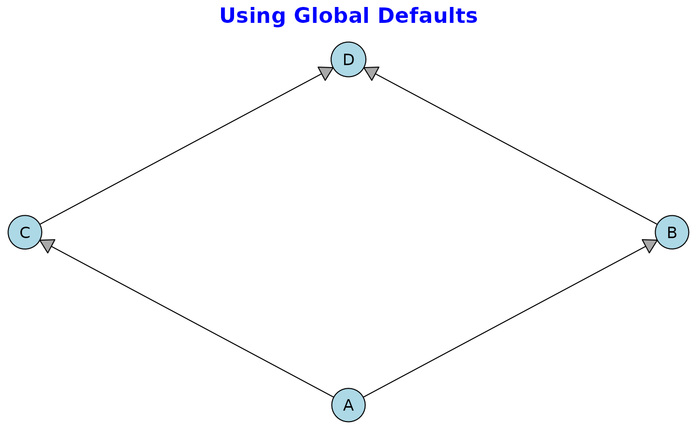
Per-Plot Overrides
Global options serve as defaults that can be overridden:
# Set global node color
caugi_options(plot = list(
node_style = list(fill = "lightblue")
))
# Override for this specific plot
plot(cg,
main = "Custom Colors",
node_style = list(fill = "pink")
)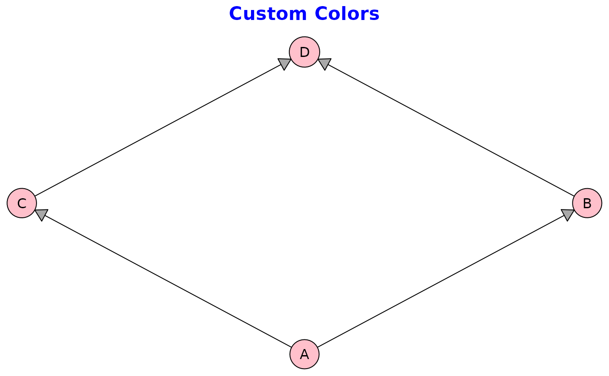
# Reset to defauls
caugi_options(caugi_default_options())Available Options
The following options can be configured under plot:
-
spacing: Agrid::unit()controlling space between composed plots -
node_style: List withfill,padding, andsize -
edge_style: List witharrow_sizeandfill -
label_style: List of text parameters (seegrid::gpar()) -
title_style: List withcol,fontface, andfontsize
# View all current options
caugi_options()
#> $use_open_graph_definition
#> [1] TRUE
#>
#> $plot
#> $plot$spacing
#> [1] 1lines
#>
#> $plot$node_style
#> $plot$node_style$fill
#> [1] "lightgrey"
#>
#> $plot$node_style$padding
#> [1] 2
#>
#> $plot$node_style$size
#> [1] 1
#>
#>
#> $plot$edge_style
#> $plot$edge_style$arrow_size
#> [1] 3
#>
#> $plot$edge_style$circle_size
#> [1] 1.5
#>
#> $plot$edge_style$fill
#> [1] "black"
#>
#>
#> $plot$label_style
#> list()
#>
#> $plot$title_style
#> $plot$title_style$col
#> [1] "black"
#>
#> $plot$title_style$fontface
#> [1] "bold"
#>
#> $plot$title_style$fontsize
#> [1] 14.4
#>
#>
#> $plot$tier_style
#> $plot$tier_style$boxes
#> [1] TRUE
#>
#> $plot$tier_style$labels
#> [1] TRUE
#>
#> $plot$tier_style$fill
#> [1] "lightsteelblue"
#>
#> $plot$tier_style$col
#> [1] "transparent"
#>
#> $plot$tier_style$label_style
#> list()
#>
#> $plot$tier_style$lwd
#> [1] 1
#>
#> $plot$tier_style$alpha
#> [1] 1
#>
#> $plot$tier_style$padding
#> [1] 4mm
# Query specific option
caugi_options("plot")
#> $spacing
#> [1] 1lines
#>
#> $node_style
#> $node_style$fill
#> [1] "lightgrey"
#>
#> $node_style$padding
#> [1] 2
#>
#> $node_style$size
#> [1] 1
#>
#>
#> $edge_style
#> $edge_style$arrow_size
#> [1] 3
#>
#> $edge_style$circle_size
#> [1] 1.5
#>
#> $edge_style$fill
#> [1] "black"
#>
#>
#> $label_style
#> list()
#>
#> $title_style
#> $title_style$col
#> [1] "black"
#>
#> $title_style$fontface
#> [1] "bold"
#>
#> $title_style$fontsize
#> [1] 14.4
#>
#>
#> $tier_style
#> $tier_style$boxes
#> [1] TRUE
#>
#> $tier_style$labels
#> [1] TRUE
#>
#> $tier_style$fill
#> [1] "lightsteelblue"
#>
#> $tier_style$col
#> [1] "transparent"
#>
#> $tier_style$label_style
#> list()
#>
#> $tier_style$lwd
#> [1] 1
#>
#> $tier_style$alpha
#> [1] 1
#>
#> $tier_style$padding
#> [1] 4mmAdvanced Usage
Manual Layouts
You can compute layouts separately and reuse them. First, compute the layout coordinates:
coords <- caugi_layout(dag, method = "sugiyama")
# The layout can be used for analysis or custom plotting
print(coords)
#> name x y
#> 1 X1 0.25 0.0
#> 2 X2 0.75 0.0
#> 3 M1 0.00 0.5
#> 4 M2 0.50 0.5
#> 5 M3 1.00 0.5
#> 6 Y 0.50 1.0
# Plot uses the same layout, calling caugi_layout internally
plot(dag, layout = "sugiyama")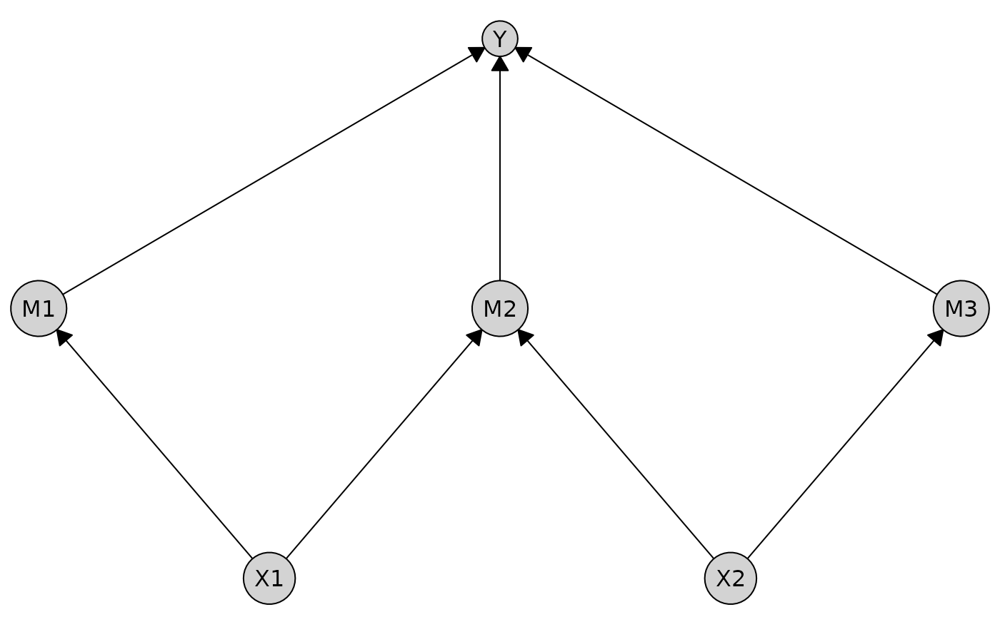
Integration with Grid Graphics
caugi plots are built on grid graphics, and provide
access to the underlying grid grob object in the
@grob slot of the plot output. This allows for further
customization using grid functions.
# Create a plot
p <- plot(cg)
# The grob slot is a grid graphics object
class(p@grob)
#> [1] "gTree" "grob" "gDesc"
# You can manipulate it with grid functions
library(grid)
# Draw the plot rotated by 30 degrees
pushViewport(viewport(angle = 30))
grid.draw(p@grob)
popViewport()
The composition operators work by manipulating these grid grobs, creating flexible and performant multi-plot layouts without requiring external packages.